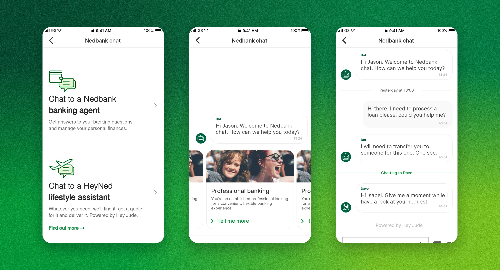
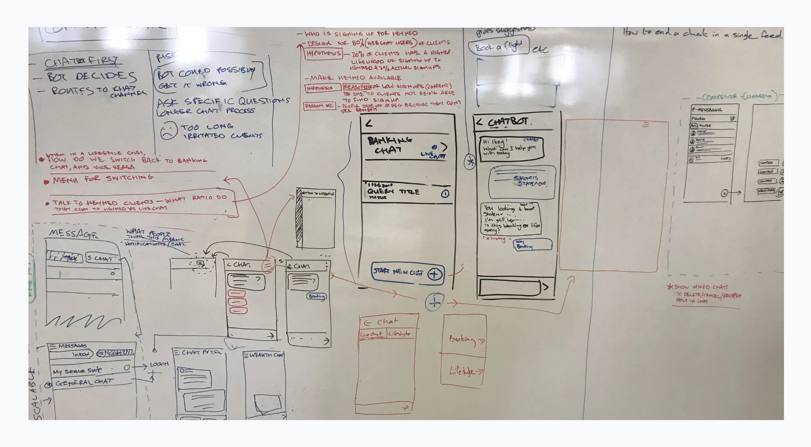
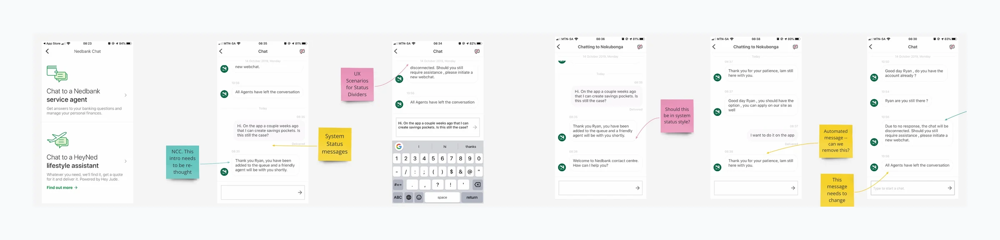
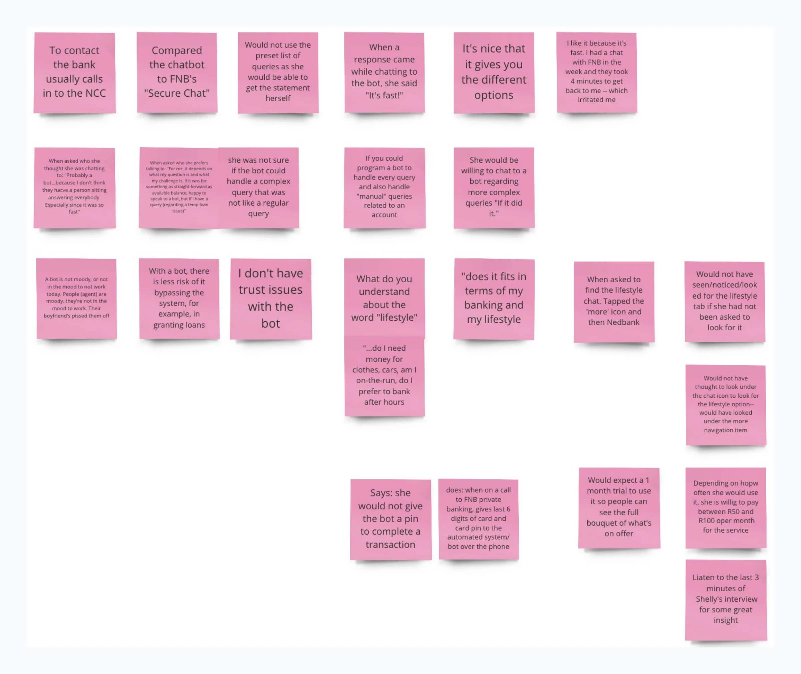
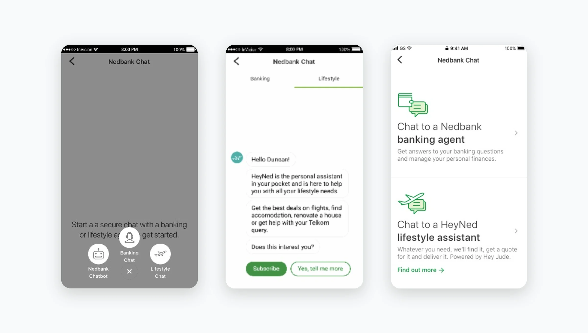
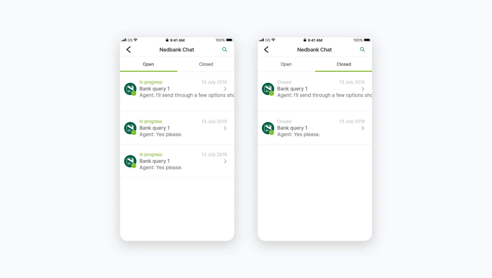

One button for every kind of help
Nedbank wanted one chat button in the Money App that could reach a banking agent, a chatbot, or HeyNed, a paid lifestyle concierge run with partner Hey Jude.
I was the CX and product design lead from 2018 to 2020, reporting to the VP of Design, working with a UX designer, two UI designers, a product manager and engineering. I led the research and turned it into the flows the team built.
Two systems that worked in opposite ways
Hey Jude ran long-lived tasks. A client could have several open, any agent could reply, and replies arrived by push. Banking chat ran one short session at a time and closed after two minutes of silence. The design problem was making both feel like one conversation.

The first whiteboard session: chat first, the bot decides, and how to switch between banking and lifestyle in a single feed.
Sitting beside the agents
A teammate and I each sat in on 10 live chats at the contact centre. When the agent's tools failed, freezing or letting a new chat take over the screen, the client felt it straight away. Fixing the client screens alone wouldn't fix the experience.

Reviewing a real chat screen by screen, with notes on every system message that needed to change.
Clients wanted a person
We briefed Nedbank's research team on who to recruit and what to learn. Clients struggled to find chat at all; one spent more than 10 minutes looking. Bots felt "like chatting to a ghost". People tapped preset options happily, but nobody wanted to make a payment through a bot.

One participant's notes from the affinity map. She'd chat to a bot "if it did it", but wouldn't give it a PIN.
Three rounds to get one button right
Our first version opened three choices: chatbot, banking chat and lifestyle chat. Testers skipped the bot. The second used Banking and Lifestyle tabs, and nobody noticed the Lifestyle tab.
The third was a simple choice of two, each with its own illustration: a Nedbank banking agent or a HeyNed lifestyle assistant. People could tell them apart at a glance.

Round one, a pop-out of three options. Round two, tabs. Round three, the choice we went with.
A bot that knows when to step aside
The bot greets clients with the contact centre's most common queries, like reversing a debit order or resetting a password, and passes the chat to a person, history included, when it can't help. Testing shaped the words. "Back" and "Not what I wanted" meant the same thing to everyone, so one had to go.

The bot opens with the top queries. Open and closed chats keep each conversation in one place.
What shipped, and what didn't
Two kinds of chat launched. The Nedbank banking agent routed clients to a person in the bank's own call centre. The HeyNed lifestyle assistant handed them to a Hey Jude agent, sometimes sitting inside Nedbank's systems. We didn't control those replies or how that infrastructure was built, so we designed our side around it. HeyNed started with a limited set of features so the bank could test it.
The chatbot was harder. This was before today's large language models, so it had to be trained by hand with experts and lots of data. It wasn't live when I left. Co-browsing didn't launch; it was complicated on phones.